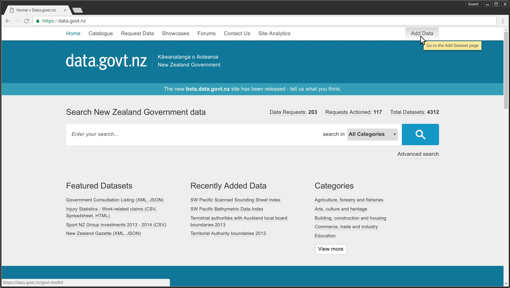

Intro to the Open Data Tool Kit
The Open Data Toolkit is designed to help governments and open data enthusiasts understand the basic concepts of Open Data, then in planning and implementing an open government data program and some tricks on how to approach a dataset.
Getting started with Open Data can be easier than many people think. If you have data in a re-usable electronic form, a publicly accessible domain to put it and an open license, then you’re on the right path.
This toolkit provides a comprehensive step by step approach to help government agencies release more open data in a simplified manner.
Learn about Open Data
What is Open Data?
According to Open Data Institute, “Open data is data that anyone can access, use or share. Simple as that. When big companies or governments release non-personal data, it enables small businesses, citizens and medical researchers to develop resources which make crucial improvements to their communities.”
What is Open Government Data?
Open government data means:
Data produced or commissioned by government or government controlled entities Data which is open as defined in the Open Definition – that is, it can be freely used, reused and redistributed by anyone.
What is good Open Data?
// need to think of an alternative question.
What is machine readable data?
Data in a data format that can be automatically read and processed by a computer, such as CSV, JSON, XML, etc. Machine-readable data must be structured data.
Some human-readable formats, such as PDF, are not machine-readable as they are not structured data, i.e. the representation of the data on disk does not represent the actual relationships present in the data.
Why Open Data?
Doing Open data is not easy, requires time and resources, and also a challenge to make sure one doesn’t cross the fine line between transparency and privacy. So if it is so challenging and requires money, then the question is : Is it worth it?
Watch this video by Open Data NZ team and listen to the team talk about its potentials…
This is just the tip of the iceberg, there is much more to this. Imagine how much more potential it has when we start talking about collaboration between different agencies and governements.
Some of the key areas where Open Government Data is creating value are:
- Transparency and democratic control
- Participation
- Self-empowerment
- Improved or new private products and services
- Innovation
- Improved efficiency of government services
- Improved effectiveness of government services
- Impact measurement of policies
- New knowledge from combined data sources and patterns in large data volumes
A few examples that validate the above:
- The [‘tax tree’] and ‘where does my money go’ are projects that show how tax money is being spent by government.
- And there’s the example of how open data saved Canada $3.2 billion in charity tax fraud.
- Also various websites such as the Danish folketsting.dk track activity in parliament and the law making processes, so you can see what exactly is happening, and which parliamentarians are involved.
- It also helps in making more informed personal life decisions, A woman in Denmark built website, which showed all the Danish public toilets, so that people she knew with bladder problems can now trust themselves to go out more again.
For more examples, see here.
In summary, key benefits of open data include:
- Promoting greater transparency and engagement between government and community-members by allowing scope for data to be analysed and visualised in unique and different ways (where government may not always have the expertise or resources to do so). This can lead to a more engaged, connected and informed community and can help highlight some of the work councils are doing behind the scenes to collect and manage public data.
- Facilitating social and commercial innovation, by allowing the growth of new business and service models that rely on open data.
- Improving service delivery and community satisfaction by allowing citizens to interact with public government data via online interfaces or community-developed apps.
In the computer world there is something called Linus’ Law, which states: “given enough eyeballs, all bugs (problems) are shallow.” and one can draw parallels from it for almost everything. There can also be long-term or unforeseen benefits in opening data. This is because it is not always possible to predict the kinds of innovation that may evolve in response to the release of open data.
###Sources
- Open Knowledge ‘What is Open?’ and ‘Why Open Data?’ licensed under CC BY 4.0 International Licence
- Open Data Field Guide – Socrata
- Further case studies are available via the Open Data Institute
- Open Data Playbook – Code for America
- Open Data in 60 Seconds – World Bank
- Open Data Handbook
Examples of Open Data usage
So, you think Open Data sounds like a really swell proposition but you’re still itching to know what it can help accomplish? Surely people aren’t interesting X dataset are they?
Let us introduce you to a few Open Data oddities that have popped up over the past few years. They may seem peculiar but there’s no doubt that they’ve definitely challenged the assumptions about how useful any given data set may be!
Adopt A Hydrant
Adopt a what? Yup, you heard me right. The precise location of fire hydrants in Boston City may put you to sleep at first but what if someone took it and made something, not only enjoyable but also beneficial to the city?
A typical snow storm in Boston can blanket the city for days, forcing residents to shovel their driveways but other utilities can remain lost for days. In a life or death situation like a burning build, a firefighter may not have time to dig out a hydrant, let alone spend the time necessarily to locate it under such heavy snowfall.
This was exactly the type of problem solved by Adopt A Hydrant using Open Data. Citizens of Boston could ‘adopt’ a hydrant of their own which they kept clean and shovelled. If they didn’t keep up their responsibilities in a timely manner, neighbours would have the opportunity to “steal” their hydrant away from them!
You can read more about the story here but it’s a good example of how you can “gamify” data and get citizens engaged in city affairs in a way that they otherwise wouldn’t have.
Best of all, it’s open source as well which means anyone can take the application and with a bit of retooling, adapt it to fit their city too. There have been a few interesting spin offs already like Adopt A Siren in Honolulu.
Email A Tree
What do you do if you’re a city that has an ever expanding amount of trees but not enough resources to monitor them all? Give them email addresses!
Well, I’m sure there are other alternatives but this crafty application of data and technology produced a website that let Melbourne citizens email specific trees to report issues like broken branches or fallen leaves.
It worked!
Funnily enough, citizens also started expressing their affection for their favourite trees as well, writing in to say how much they adored their luscious leaves or that they were upset about trucks scraping the undersides of branches.
Those are just a few examples of how Open Data can be utilised and even disguised as a novelty at the same time making it much more attractive than something like a survey.
Sources:
- http://www.citymetric.com/horizons/story-melbournes-tree-mail-shows-trees-are-more-just-ecosystem-1264
- http://www.theatlantic.com/technology/archive/2015/07/when-you-give-a-tree-an-email-address/398210/
- http://melbourneurbanforestvisual.com.au
- http://www.abc.net.au/news/2015-07-22/most-emailed-tree-in-melbourne-is-punt-rd-golden-elm/6639062
- http://adoptatree.brewingabetterforest.com/
- http://old.codeforamerica.org/?cfa_app=adopt-a-hydrant-2
- http://www.accuweather.com/en/weather-news/adopt-a-hydrant-snowstorms/19897879
Open Data Charter and NZDIMP
What is International Open Data Charter?
The International Open Data Charter is a set of principles and best practices for the release of governmental open data.
The charter mandates that data released by governments comply with these principles:
- Open by Default
- Timely and Comprehensive
- Accessible and Usable
- Comparable and Interoperable
- For Improved Governance and Citizen Engagement
- For Inclusive Development and Innovation
The adherents to the International Open Data Charter, recognize that governments and other public sector organizations hold vast amounts of data that may be of interest to citizens, and that this data is an underused resource. Opening up government data can encourage the building of more interconnected societies that better meet the needs of our citizens and allow innovation, justice, transparency, and prosperity to flourish, all while ensuring civic participation in public decisions and accountability for governments.
To understand how ODC was formed, read here
Which countries have adopted the Open Data Charter?
As of October 2016, the international Open Data Charter has been adopted by 39 governments, 15 national and 24 local/subnational.
View the list here
Which organizations have endorsed the Open Data Charter?
As of October 2016, the Open Data Charter has been endorsed by 32 organizations and non-state actors. view the list here
To adopt the charter, follow the process here To endorse the charter, follow the process here
Open Government Partnership
The Open Government Partnership is a multilateral initiative that aims to secure concrete commitments from governments to promote transparency, empower citizens, fight corruption, and harness new technologies to strengthen governance. In the spirit of multi-stakeholder collaboration, OGP is overseen by a Steering Committee including representatives of governments and civil society organizations.
To become a member of OGP, participating countries must endorse a high-level Open Government Declaration, deliver a country action plan developed with public consultation, and commit to independent reporting on their progress going forward.
To learn more on how to be a member, read more here.
What does it mean for New Zealand?
New Zealand Data and Information Management Principles: The New Zealand Government has adopted a policy called New Zealand Data and Information Management Principles
The core principles of NZDIMP are:
- Open
- Protected
- Readily available
- Trusted and authoritative
- Well managed
- Reasonably priced
- Reusable
Should NZ adopt the Open Data Charter?
This is not a simple question and doesn’t have a straight-forward answer. There has been a lot of discussion going on around this and to participate in this discussion and read more about it, follow the links below.
https://www.ict.govt.nz/guidance-and-resources/open-government/engagement-activities/open-data-charter/
https://webtoolkit.govt.nz/blog/2016/09/should-new-zealand-adopt-the-international-open-data-charter/
https://www.govt.nz/browse/engaging-with-government/consultations-have-your-say/should-the-new-zealand-government-adopt-the-international-open-data-charter/
https://www.loomio.org/g/8UcXFlAg/what-are-the-potential-impacts-if-the-open-data-charter-was-implemented-in-new-zealand
Laying the Groundwork
Launching an Open Data doesn’t have to be a tricky endeavor but rushing into it without proper planning and assessment beforehand may caught pain later on in the process.
Defining the goals of your Open Data initiative
Your Open Data initiative should align with the larger strategic goals and objectives that your organization strives towards. It may be tempting to “do open data” for the sake of it but in order to have the longest possible impact, you should have a greater goal in mind.
You should be clear from the beginning as you define your Open Data goals. This will aid your team immensely when it comes time to articulate your vision to potential stakeholders.
You should ask yourself
- What makes Open Data important for your agency?
- What would a successful Open Data initiative look like?
- What existing needs and priorities does your organization have, that can be supported by Open Data?
Common goals and outcomes for Open Data
Depending on the values, priorities and resources afforded to your Open Data initiative, you may have a single goal or multiple. Here are some examples of common goals:
- Saving staff hours through increased sharing of information between departments.
- Enabling citizens to gain a better understanding of government activity, promoting economic development and improving quality of life.
- Providing greater availability, and awareness, of data used in data-driven decision-making.
- Providing a basis for a local civic technology ecosystem.
- Reducing the volume of incoming Official Information Act requests by making highly requested, non-sensitive information available in a self-serve format.
Aligning with organizational goals
A key avenue for generating initial buy-in from leadership is to show how embracing open data can drive progress on high priority issues. You should consider how open data can support the priorities of high-level policies that are relevant to your context.
It could be aiding in creating jobs, reducing vacant and abandoned properties, or increasing government transparency. The way you pitch your Open Data plan can help get some quick wins under your belt and get on your way to a longer-term initiative.
You may find it useful to review recent high-profile speeches and statements from your agency leadership to identify some potential key issues your initiative may assist with.
Don’t be afraid to be creative with your solutions as open data can have impact in the most unexpected areas.
Building support and getting executive buy-in
Open Data Toolkit
Licensing
It can be tough deciding how to release your code into the outside world.
There’s so many licenses, each all doing different things and aaah, it’s just a nightmare, right?
Thankfully, Open Data NZ have tackled this beast with the New Zealand Government Open Access and Licensing (NZGOAL) Framework.
Of course, you’re free to pick and choose as you like but if you feel that you need guidance in this area, it’s definitely worth a read.
Publishing Data
This guide will be likely be most useful to IT managers, GIS coordinators, asset managers and database admin strators. The focus of this guide will be generic, easily uploadable datasets such as PDFs, CSVs, spreadsheets and so on.
Larger, more complex datasets, eg; geospatial will likely be unable to utilise data.govt.nz for storage and may prefer to look into their own hosting solutions.
You will still be able to index larger datasets in the data.govt.nz search engine, it’s just that the resource will be located on an external service.

The general process for uploading a dataset is as follows:
- Identify datasets to publish
- For each dataset:
- Export the data and ensure it is cleaned, raw data
- Upload the dataset to data.govt.nz, providing metadata and choosing an appropriate license
- Schedule regular updates
Identify Datasets
For the first dataset, it’s recommended that you pick something that is likely to be useful straight away. It should also be known to be of good quality as well as being free from any privacy or confidentiality issues.
Some examples of good starting datasets that don’t change frequently would be drain pipes, waste collection zones, dog walking zones, and customer service center locations.
Preparing the Datasets
In order to prepare data sets to maximize their usefulness, it’s important to acknowledge the different types of formats available as well as the limitations that they may present:
| Tabular | ||
|---|---|---|
| File Type | Openness | Notes |
| CSV | High | The best format for opening structured data (eg. As spreadsheets) |
| XLS or XLSX | Low | Limits machine reading and use on non-Microsoft systems |
| Spatial | ||
| File Type | Openness | Notes |
| KML | High | An open standard developed for Google Earth. May not translate to other systems. KMZ is also available as a packaged set of KML files. |
| WMS | High | Standardized format for georeferenced map images |
| WFS | High | Standardized format for geographical features |
| Text | ||
| File Type | Openness | Notes |
| TXT | High | Simple text format readable on most operating systems. No formatting is available |
| RTF | High | Simple text format readable on most operating systems which retains some formatting |
| ODT | Medium | Limits machine reading |
| DOC or DOCX | Low | Limits machine reading and use on non-Microsoft systems |
| Low | Useful for document exchange to preserve formatting, but has limitations for machine reading, character recognition and remixing. |
Any tabular data should also be cleansed. This means that files should be:
- raw - Presented in the simplest possible format with a single header row and
- clean - Using uniform data formatting (eg; Numerical dates, postcodes in every field) with no missing entries, no embedded non-text information, data in every field and as few mistakes as possible
Examples of raw, clean data
| Date | Age | Gender | Postcode |
|---|---|---|---|
| 20/10/2013 | 12 | M | 2580 |
| 10/01/2013 | - | F | 1462 |
| 02/11/2011 | 22 | M | - |
| 12/05/2012 | 45 | F | 1464 |
| 19/01/2010 | 75 | F | 1800 |
Examples of data that is not raw or clean
| Copyright of Dept. X | |||
|---|---|---|---|
| Date | Age | Gender | Postcode |
| 01/20/2013 | Fifteen | Female | Barton |
| 10th Dec 11 | 15 | Fem | - |
| 02/11/2011 | xx* | Male | 3652 |
| 12/05/2012 | 45 | F | 1464 |
| * Footnote Information |
Creating the Datasets
From the front page of the data.govt.nz website, you’ll be able to see an Add Data button in the top right corner followed by Submit Dataset on the next page.

Your submission to data.govt.nz will a few pieces of information:
- Dataset title
- A direct link to the dataset
- A description of the dataset
- The category it fits under
- The formats it is available is
- Re-use rights / license (See below)
- Update frequency (daily, monthly, yearly?)
- Title of the agency responsible for the dataset
- A contact email address (which will NOT be published)
Picking a license
Licensing is easily the most important aspect of releasing your dataset. It will determine whether or not your dataset can be used for a commercial purpose, publically redistributed and/or whether or not others have to provide attribution for your work.
For assistance in deciding, you may wish to consult the NZGOAL framework which provides guidance for agencies to follow when releasing copyright works and non-copyright material for re-use by others.
Once you’ve successfully uploaded your dataset, you should be able to see it live like so in the catalogue:

Scheduling regular updates
It’s important to keep a schedule of how often the datasets you have provided are updated. Some datasets may not need updating very often but others, such as weekly gas prices, will be at their peak usefulness should they be updated in a timely manner.
For the example of gas prices, it wouldn’t make sense to only update the dataset once a month and interested users would likely look somewhere else for fresher data.
Open Data Standards
Open Data is spreading across the globe, and each country has its own open data programme. However when we look through the released data, we can conclude that this is happening without well documented standards, and the result is inconsistent meta data, no uniform approval process, no uniform normalisaton process, conflicting terms of use.
And this is not just limited to different countries or organisations. Open data is hard to compare even across teams located in the same building.
What are standards with respect to open data? And why do we need them?
By standards here we mean something widely accepted, agreed upon, or established means of determining what a dataset should be.
This is to allow datasets from different agencies to be easily comparable, joined into something bigger, to support wider research, knowledge exchange, app scalability and in general to make it easy for the value addeed resellers.
Once defined, the process will help ease the whole ritual acssociated with releasing a dataset.
This also aligns with the concept of frictionless data that was introduced by Open knowledge foundation.
Some examples of uniformity in datasets are:
- Similar data and time format across all datasets
- Having minimum required fields
- Similar dataset across different agencies should have similar structure and fields
This needs to be taken up as an elaborate api design initiative that should involve representative from all government agencies. A collaborative effort done once can save a lot of time in the hindsight.
A few references for standards are:
Dataset Register
Keeping a simple dataset register helps track what data assets your organisation has, and their status in the pipeline towards eventual release as open data.
The main points to focus on are:
- Where is the data managed?
- Who “owns” it?
- What system is it in?
- Which unit does it fall under?
- Is it already published?
- Technical Attributes
- Is it spatial or tabular?
- How many attributes are there?
- How often is it updated?
- Value to the public
- What are its potential uses?
- Are there comparable datasets?
- How unique is the data?
- Progress towards being published
- Does the data need cleaning?
- Has all confidential information been removed?
- Does it need transforming to meet an Open Data standard?
- Are all approvals obtained?
Open Data Tools
Here are a number of tools that you may find useful:
- Github is an online source code hosting platform that utilizes the Git version control system. If you’re working in a government space, the Github and Government site is recommended.
- ogr2ogr is a part of the GDAL library which can be used to translate between a number of geospatial formats, such as Esri Shapefile to GeoJSON. If you are unable to install binaries on your system, there is also an unofficial online interface called OGRE. For more information and examples, this post is worth checking out.
- Octopub is a site which connects with Github and provides a simple interface for uploading CSV tabular datasets for those who aren’t experienced with Git or Github.
- CKAN is an open source data management system aimed at governments, companies and organizations want a quick way to openly provide datasets to the public. It also comes with API support baked in, allowing automated upload tools to be built by more tech savvy members of your organization.
- Loomio is a tool for fast, inclusive and effective decision making without requiring meetings. Members vote on proposals while also being able to provide valuable feedback and constructive criticism. New Zealand’s very own NZGOAL Framework was created with the help of Loomio. You can see their process here as an example of what it might look like in your organization.
Community
Here are some contacts and resources that may be useful
New Zealand
-
R9 Accelerator was formed as testing ground for innovative solutions to everyday issues within government. Creatives from both the public and private space have three months in which they conduct a deep dive into areas of opportunity. During that time, they come to understand the issues that government is facing and invent solutions to help better aid their customers
-
Code for Aoteraoa is New Zealand’s own version of the global Code for All initiative which is currently undoing a pilot program with a four civic tech fellows, Two are housed in the Wellington City Council with another two aiding LINZ and they both work to build tools and resources to aid their respective agencies in their Open Data journeys.
-
Open Government Ninjas is an online discussion forum for those who are working on Open Government projects or in the Open Data space in general.
-
Open Civic Directory is a great place to find like-minded people and organizations in the civic tech space.
-
GovHack NZ is perhaps the biggest hackathon event in New Zealand (and Australia too!) which brings tech folks and government data together for 48 houurs and results in hundreds of innovative projects.
-
NZ Govt Web Toolkit is a toolkit that “provides standards, guidance, tips, and strategic advice” to those working on government sites. There’s plenty of good information to be found.
International
-
Code for All is an international network of organizations who believe that digital technology opens new channels for citizens to more meaningfully engage in the public sphere and have a positive impact on their communities.
-
The Open Data Institute was formed by Sir Tim Berners-Lee, inventor of the web and AI expert Sir Nigel Shadbolt to bring together both commercial and non-commercial organizations, and governments. They work to help identify address how data will impact their businesses and sectors, and aid in building a strong data infrastructure that uses open standards and licensing. The Institute offers online courses, membership, webinars and events that are accessible to people around the world. They also have a research focus and an app for governments who want to track their progress with open data.
-
The Open Knowledge Foundation is a global non-profit organisation focusing on open information. The group has produced an Open Data Handbook that provides guidance on legal, social and technical aspects of open data, including step-by-step how-to guides. The handbook also includes a number of case studies, videos and articles highlighting the socio-economic value of open data.
Open Knowledge has a Working Group on Open Government Data which publishes guidelines for making official information legally and technically open. They also support development of open government data catalogue to ensure various platforms are inteoperable.
The Working Group is open to everyone and runs a mailing list, regular conference calls and a wiki.
Code for America operates as a network focusing on improving government service delivery through technology. They have a project focusing on the creation of municipal open data portals called the Digital Front Door Project. They have also put together an Open Government Playbook which provides guidance on establishing government open data programs.
The World Bank
In 2014, The World Bank joined forces with the Open Data Institute and Open Knowledge in a project designed to help policy-makers, NGOs and citizens in developing countries to understand and harness the benefits of open data. This resulted in the creation of the World Bank’s Open Data Toolkit which includes a number of training resources.
Sunlight foundation
The Sunlight Foundation is a US non-profit that focuses on open data, tech and journalism in the context of democratic participation. It began operating in 2006 and has produced Open Data Policy Guidelines with a focus on proactive release, engagement, efficiency and economic growth.
Open Government Partnership Open Data Working Group
The Open Government partnership is an international group that launched in 2011. It aims to promote open government more broadly, including open data. It is overseen by a Steering Committee comprising government and non-government representatives. Australia is a participating country of the partnership and is developing an action plan for open government. Consultation on the Australian action plan began on 17 November 2015.
The OGP Open Data Working Group’s workflow includes:
development of open data principles and tools measuring the impact of open data promoting standards and interoperability (including an inventory of current standards ) expanding tools and resources Open Data Stack Exchange
The Open Data Stack Exchange is a question and answer site for developers and researchers interested in open data.
Socrata
Socrata is a private cloud software company founded in 2007 and based in Seattle. Their website contains a link to an Open Data Network which operates as a repository of international datasets and is designed to connect people who publish data with data users e.g. businesses, developers and analysts. Members of the network also connect to share best practices and standards.
Socrata also has an Open Data Field Guide written in plain English and aimed at more experienced open data providers.
The Socrata website contains links to a number of webinars and other resources, including case studies about how open data has created efficiencies for government (focusing on the Socrata software).
Project Open Data
Project Open Data is a US government collection of code, tools and case studies to help agencies implement the US government open data policy. The project maintains a list of useful tools and materials here.
Feedback
About
This Open Data Tool Kit is the result of a collaboration between Code for Aotearoa and Land Information New Zealand.
This site was developed by Vaishnavi Iyer and Marcus Crane as a part of the fellowship program and is intended to support local councils and Federal Government agencies to release their datasets.
All content on this site is licensed Creative Commons Attribution 4.0. Please attribute Code for Aotearoa.
Refer to our attributions page for attributions of other work on the site.